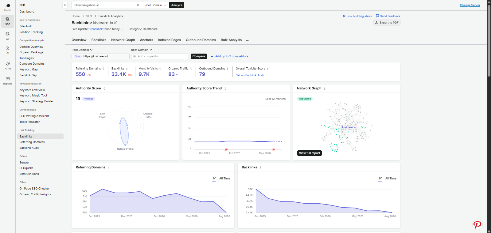
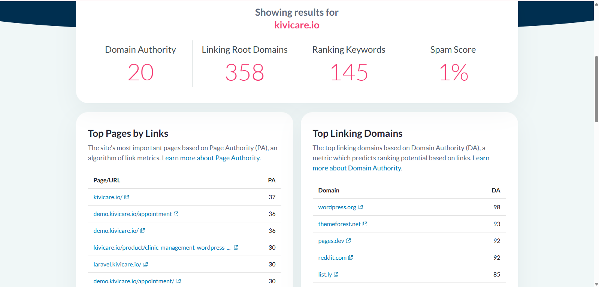
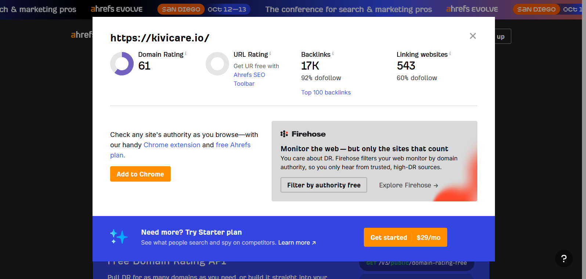
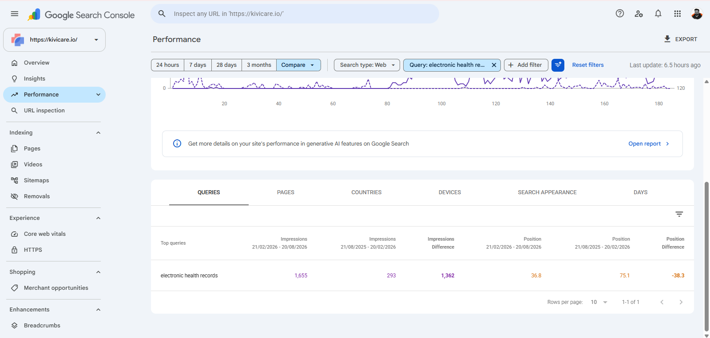
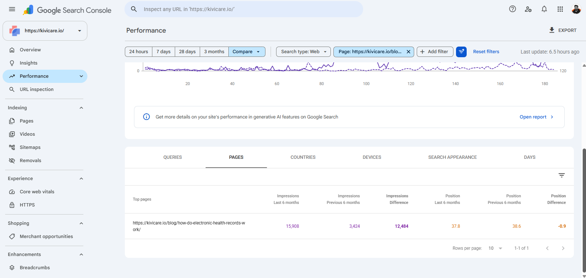

The Starting Point
KiviCare was not starting from zero.
The website already had backlinks and an established product ecosystem. The problem was that the backlink strategy behind that website was not as controlled as it needed to be.
The existing profile showed issues such as:
- Limited backlink volume in areas that needed stronger support
- Irrelevant linking domains
- Low-quality backlinks
- Too much homepage concentration
- Weak authority support for deeper pages
- Poor anchor-text diversity
- Heavy dependence on branded anchors
- Some overused exact-match anchors
- An authority gap compared with competitors
Exact historical authority and referring-domain figures were not available. For that reason, I do not create unsupported before-and-after DR, DA, or referring-domain growth claims.
The challenge was not:
It was:
The Initial Off-Page Problems
Backlink Quality
Some existing links came from irrelevant, questionable, or low-quality domains. A backlink was not automatically useful simply because it existed.
Relevance
Healthcare software needs a tighter contextual relationship than a generic technology campaign. Unrelated links could add volume without adding meaningful topical support.
Anchor Text
The anchor profile relied heavily on branded anchors, homepage URLs, and repeated commercial phrases. A more natural mix was needed.
Target Pages
Too much activity was concentrated around the homepage. Relevant informational and topic-specific pages also needed authority where the context justified it.
Campaign Control
Backlinks needed a clearer review process before and after implementation rather than a volume-first approach.
The solution required more than prospecting. It needed:
My Role
I lead KiviCare's off-page SEO strategy end to end.
My responsibilities include:
- Backlink strategy
- Backlink-profile audits
- Identifying low-quality domains
- Website quality evaluation
- Competitor research
- Target-page selection
- Anchor-text research
- Link-opportunity approval
- SEO team coordination
- Final backlink verification
- Monthly backlink reporting
Before a backlink is created, I review:
- The Website
- Relevance
- Quality
- Target Page
- Anchor Text
- Placement Opportunity
After the backlink goes live, I verify the final placement. This keeps the campaign controlled instead of treating link building as a volume exercise.
Starting With the Backlink Audit
Before expanding the campaign, I first wanted to understand what already existed.
The audit focused on identifying:
- Relevant Domains
- Irrelevant Domains
- Low-Quality Links
- Questionable Placements
- Anchor Patterns
- Homepage Concentration
- Deep-Page Support
- Overall Authority Gaps
This mattered because building more links on top of an inconsistent profile would not solve the underlying problem.
Auditing and Cleaning Low-Quality Backlinks
The audit identified links from domains that appeared irrelevant, low quality, questionable, or potentially harmful.
I reviewed these domains individually rather than assuming every weak-looking backlink needed action.
Selected problematic domains were identified for cleanup where appropriate.
Disavowing Selected Backlinks
Selected problematic domains were reviewed and, where appropriate, submitted through Google's Disavow Links tool.
I do not treat disavowal as routine cleanup or assume that a low third-party metric alone makes a backlink harmful.
The objective was to deal carefully with links that appeared clearly problematic while keeping the wider focus on improving the quality of the backlink profile.
Rebuilding the Off-Page Strategy
After the audit, I defined a clearer objective:
Build authority through relevant healthcare and software websites while supporting important KiviCare pages with stronger contextual links.
The strategy focused on:
- Relevance before volume
- Better-quality domains
- Contextual placements
- Better anchor selection
- Smarter target-page selection
- Stronger niche relationships
- Consistent monthly acquisition
- Ongoing backlink monitoring
A high DR or DA alone was not enough for approval. Every opportunity needed to make sense within the context of:
- Healthcare
- Software
- Clinic Management
- Relevant User Problems
KiviCare's product sits directly in these areas, covering clinic workflows, appointments, patient records, EHR, telemedicine, and practice management.
Building a Backlink Quality Framework
Every backlink opportunity goes through a review process.
Niche Relevance
Is the website genuinely connected to healthcare, software, technology, business, or another closely related topic?
Organic Traffic
Does the site appear to receive real search visibility?
DA / DR
Authority metrics are supporting signals, not the only reason to approve a website.
Spam Indicators
High-risk domains are avoided.
Website Quality
I manually review the website instead of relying only on third-party scores.
Indexed Pages
Weak or unusual indexation can signal deeper quality concerns.
Country Relevance
Geographic fit is considered where useful.
Outbound-Link Behaviour
I review whether the site appears to exist mainly for selling or exchanging backlinks.
Content Quality
The surrounding page needs enough topical context for the KiviCare reference to make sense.
This filtering stage became one of the most important parts of the campaign.
Why Healthcare Relevance Matters
Healthcare software creates a different backlink problem from a generic SaaS website.
I do not always look for a page containing the exact anchor keyword. Instead, I look for content where KiviCare naturally belongs.
Examples include articles discussing:
- Healthcare Software
- Clinic Management
- Patient Management
- Appointment Systems
- Electronic Health Records
- Healthcare Workflows
A relevant EHR article can naturally support a KiviCare healthcare resource even if the paragraph does not contain an exact-match commercial phrase.
This became one of the strongest principles from the campaign:
Link-Building Methods
The campaign primarily uses two approaches.
Contextual Link Partnerships
Approximately 90% of placements came through individually reviewed partnerships. Each opportunity was evaluated for site relevance, surrounding content, target-page fit, and anchor context before implementation.
Guest Posts
Approximately 10% of placements came through guest posts where a longer contextual placement made sense and the website met the campaign's quality and relevance requirements.
The objective was contextual fit, not mechanical reciprocal linking.
Building 60+ New Referring Domains
Over approximately six months, the SEO team built links from:
60+ New Referring Domains
at an average pace of:
10–12 New Links Per Month
The majority of placements were do-follow.
The goal was not to create a sudden artificial spike in backlink activity. It was to build authority consistently while maintaining quality control.
That gave the campaign a more predictable rhythm:
Building the Target-Page Strategy
Not every backlink should point to the homepage.
Most campaign links have supported:
- KiviCare Homepage
- Relevant Informational Blog Pages
The decision depends primarily on context.
For example, if an external article discusses:
Electronic Health Records
then linking to a relevant KiviCare EHR article may be more useful than forcing a homepage link.
If the context is broader clinic-management software, the homepage may make more sense.
This helped improve deep-page support while keeping placements more natural.
Building the Anchor-Text Strategy
The campaign also moved away from over-reliance on branded anchors.
Anchor Examples
- Doctor Appointment Booking System
- Appointment Booking System
- Doctor Appointment Booking Plugin WordPress
- Appointment Booking
- Electronic Health Records
- Kivi Healthcare
Wider Anchor Mix
- Commercial Anchors
- Partial-Match Anchors
- Branded Variations
- Generic Anchors
- Contextual Anchors
The objective was not to force every target keyword into an anchor. It was to build a more diverse profile where the anchor made sense within the actual paragraph and linking page.
Selecting Keywords for Backlinks
Target keywords are selected using:
- Google Search Console
- Search Volume
- Competitor Research
- Existing Page Relevance
A keyword is not automatically selected just because it ranks on page two, three, or four.
The first question is:
This helps keep the campaign context-driven rather than purely position-driven.
Using Competitor Research
I also reviewed backlink and search patterns from healthcare technology companies including:
- ScienceSoft Healthcare
- GeBBS Healthcare Solutions
Competitor analysis helped identify:
- Healthcare terminology
- Keyword themes
- Anchor ideas
- Content types earning backlinks
- Relevant authority opportunities
The purpose was not to recreate competitor backlink profiles. It was to understand:
Building a Repeatable Backlink Approval Workflow
One of the most important improvements was turning backlink building into a repeatable process.
Identify Potential Website
Find a relevant healthcare, software, technology, business, or related domain.
Quality Review
Check traffic, authority, spam indicators, indexing, content quality, and outbound-link behaviour.
Find Relevant Content
Identify an existing page where a KiviCare reference naturally makes sense.
Select Target Page
Choose the homepage or a relevant deep page based on context.
Select Anchor
Use a commercial, partial-match, branded, generic, or contextual anchor that fits naturally.
Approve Placement
Review the opportunity before implementation.
Partnership Placement
Where a partnership is involved, identify a relevant contextual placement on both sides.
Verify the Live Link
Review the final link, surrounding content, and destination after publishing.
Report
Add completed backlinks to the monthly campaign report.
This transformed off-page SEO from individual backlink decisions into a controlled operating process.
Current Authority Profile
Exact historical third-party authority metrics were not available. For that reason, I do not present unsupported percentage growth.
Current third-party signals include:
The 550 referring domains represent KiviCare's broader current Semrush profile, including historical links, naturally acquired links, links from other campaigns, and links built during my campaign.
Therefore, I do not claim that all 550 were created by my team.
The direct campaign contribution is approximately:
60+ New Referring Domains

Authority Signals
Moz, Ahrefs, and Semrush maintain different backlink databases and definitions. I keep each metric clearly labeled by source rather than treating them as interchangeable.


Search Visibility Improvements
Search performance also improved across selected queries and pages during the campaign.
However, rankings can be affected by many factors:
- Content
- On-Page SEO
- Technical SEO
- Competition
- Google Updates
- User Behaviour
- Backlinks
Because I did not own all of those areas, I do not claim that backlink activity alone caused the ranking improvements.
Instead, I present them as:
Keyword Visibility Example
One example was:
“electronic health records”
Previous Impressions
293
Current Impressions
1,655
Previous Position
75.1
Current Position
36.8
Impressions: 293→1,655
Average Position: 75.1→36.8
The query gained substantially more search visibility during the campaign.
I do not describe this as backlinks moving the keyword from 75.1 to 36.8 because that would imply causation I cannot prove.
Instead, it is useful evidence of search improvement occurring while the backlink strategy was being strengthened.

Page Growth Example
One page that showed noticeable visibility expansion was:
How Do Electronic Health Records Work?
Previous Impressions
3,424
Current Impressions
15,908
Previous Position
38.6
Current Position
37.8
Impressions: 3,424→15,908
Average Position: 38.6→37.8
The strongest story here is visibility expansion rather than a major ranking-position improvement.
The article's search exposure increased substantially while average position moved only slightly.
Again, this is presented as performance observed during the campaign rather than a result caused exclusively by backlinks.

Improving Link Quality, Not Just Link Count
The greatest improvement in this project is broader than one keyword or authority metric.
The backlink process became more intentional.
Compared with the starting approach, the campaign now has:
- More relevant referring domains
- Better website-quality checks
- Stronger niche relevance
- More thoughtful anchor selection
- Better contextual placements
- Improved deep-page support
- A repeatable approval workflow
- Final placement verification
- Ongoing backlink-profile monitoring
That is the biggest operational change behind the campaign.
Business Impact
Lead and sales performance also improved during the wider project period.
However, commercial metrics are confidential and are intentionally excluded from this portfolio.
I also do not claim that backlink activity alone caused those business improvements.
Proof of Work
The strongest proof is placed directly beside the relevant claims throughout the case study. This section acts as a compact evidence recap instead of repeating every screenshot.
The third-party authority metrics describe the current broader domain profile. They are not presented as before-and-after campaign growth metrics because historical snapshots were not available.
Tools & Platforms Used
- Google Search Console
- Semrush
- Ahrefs
- Moz
- Ubersuggest
The Most Difficult Part
The hardest part of the campaign was not finding websites willing to provide backlinks.
It was finding:
The Right Contextual Opportunity Inside Those Websites
A domain can have good traffic, strong DR, strong DA, and good overall metrics and still be a poor backlink opportunity.
If its content has no real relationship to healthcare software, clinic management, patient workflows, or another relevant topic, forcing a KiviCare backlink into the page can weaken the quality of the placement.
That became the core of my off-page decision-making process.
What Worked Particularly Well
One strategy that worked well was improving the context around a backlink where a page was already genuinely relevant.
Instead of forcing KiviCare into a sentence where the reference did not naturally belong, the surrounding article could be expanded with a small amount of useful supporting information.
That made the KiviCare reference more logical for:
- The Reader
- The Linking Page
- The Target Page
- The Overall Topic
What I Learned
KiviCare changed how I think about link building.
Earlier, it was easy to spend too much attention on questions such as:
This project reinforced that the more important question is:
The project also reinforced that authority building should be evaluated as a relevance-first process rather than a simple backlink-volume target.
My Biggest Takeaway
KiviCare is an important project in my portfolio because it demonstrates a different type of SEO ownership.
I did not manage:
I managed:
The Off-Page SEO Strategy
That meant taking responsibility for:
- Auditing the existing backlink profile
- Identifying low-quality domains
- Reviewing selected problematic backlinks carefully
- Building a quality-review framework
- Researching anchors
- Selecting target pages
- Approving backlink websites
- Coordinating the SEO team
- Verifying placements
- Monitoring the profile
- Reporting progress
Over approximately six months, that process contributed directly to building:
60+ New Referring Domains
at a controlled pace of approximately:
10–12 Links Per Month
while making relevance, context, anchor diversity, and target-page selection central to the campaign.
For me, this project demonstrates that I can take ownership of an off-page SEO campaign end to end, turn backlink building into a structured quality-control process, coordinate execution, and build authority around relevance rather than volume.